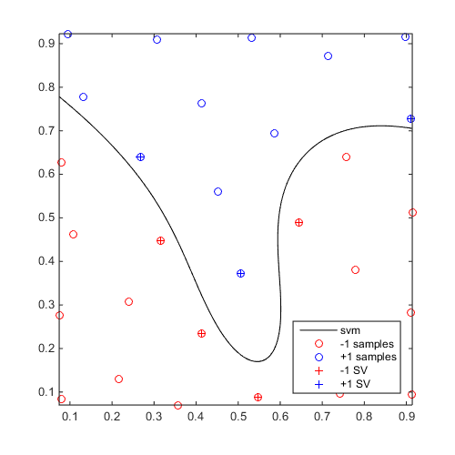
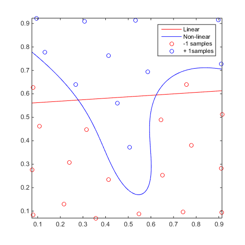
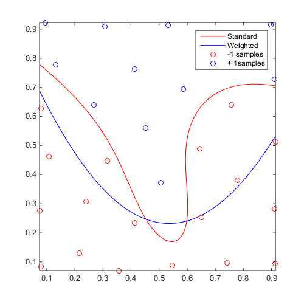

Examples / Meta-models / svm
This file is a complete demo of the capability of the svm class from the CODES toolbox.
Contents
Documentation
The documentation for the svm class can be found here.
Set rng
Set random number generator seed:
rng(0)
Simple example
Define a simple sinusoidal problem:
f=@(x)x(:,2)-sin(10*x(:,1))/4-0.5; x=CODES.sampling.cvt(30,2); y=f(x);
Build and plot an SVM:
svm=CODES.fit.svm(x,y);
figure('Position',[200 200 500 500])
svm.isoplot
 Linear vs Non-linear
Build a linear and a non-linear svm to compare:
f=@(x)x(:,2)-sin(10*x(:,1))/4-0.5; x=CODES.sampling.cvt(30,2); y=f(x); svm_lin=CODES.fit.svm(x,y,'kernel','lin','scale','square'); svm_gauss=CODES.fit.svm(x,y,'kernel','gauss'); figure('Position',[200 200 500 500]) svm_lin.isoplot('sv',false,'samples',false,'legend',false,'bcol','r') hold on svm_gauss.isoplot('sv',false,'legend',false,'bcol','b') legend('Linear','Non-linear','-1 samples','+ 1samples')
Weighted SVM
Compare standard and weighted SVM:
f=@(x)x(:,2)-sin(10*x(:,1))/4-0.5; x=CODES.sampling.cvt(30,2); y=f(x); svm=CODES.fit.svm(x,y); svm_weight=CODES.fit.svm(x,y,'weight',true,'w_plus',1,'w_minus',1e-3); figure('Position',[200 200 500 500]) svm.isoplot('sv',false,'samples',false,'legend',false,'bcol','r') hold on svm_weight.isoplot('sv',false,'legend',false,'bcol','b') legend('Standard','Weighted','-1 samples','+ 1samples')
Analytical gradient validation
Compute analytical gradient and compare to gradient obtained using finite differences:
f=@(x)x(:,2)-sin(10*x(:,1))/4-0.5; x=CODES.sampling.cvt(30,2); y=f(x); svm_dual=CODES.fit.svm(x,y,'solver','dual'); svm_libsvm=CODES.fit.svm(x,y,'solver','libsvm'); x_grad=[0.1 0.1;0.3 0.5;0.8 0.3;0.5 0.5]; CODES.common.disp_box('Gradient validation for dual solver') [~,grad]=svm_dual.eval(x_grad); grad_fd=CODES.common.grad_fd(@svm_dual.eval,x_grad); disp(grad) disp(grad_fd) CODES.common.disp_box('Gradient validation for dual solver') [~,grad]=svm_libsvm.eval(x_grad); grad_fd=CODES.common.grad_fd(@svm_libsvm.eval,x_grad); disp(grad) disp(grad_fd)
####################################### # Gradient validation for dual solver # ####################################### 77.4422 33.6491 27.0533 15.2595 -34.8233 -0.2932 -6.8104 2.8692 77.4422 33.6491 27.0533 15.2595 -34.8233 -0.2932 -6.8104 2.8692 ####################################### # Gradient validation for dual solver # ####################################### 77.4157 33.6324 27.0447 15.2572 -34.8158 -0.2919 -6.8095 2.8729 77.4157 33.6324 27.0447 15.2572 -34.8158 -0.2919 -6.8095 2.8729
Solver choice
libSVM, presented in Chang and Lin (2011), is a far superior solver all around and is the default. To illustrate, consider training a 20D dummy classifier with 1000 samples:
f=@(x)x(:,20)-0.5; x=rand(1e3,20); y=f(x); time_dual=tic; CODES.fit.svm(x,y,'solver','dual'); disp(['Dual formulation solved in ' CODES.common.time(toc(time_dual))]); time_libsvm=tic; CODES.fit.svm(x,y,'solver','libsvm'); disp(['libSVM solved in ' CODES.common.time(toc(time_libsvm))]);
Dual formulation solved in 3s libSVM solved in 7.3876e-02 s
In the specific case of linear SVM, the primal solver can have some appeal.
f=@(x)x(:,100)-0.5; x=rand(1e4,100); y=f(x); time_primal=tic; CODES.fit.svm(x,y,'solver','primal','kernel','lin'); disp(['Primal formulation solved in ' CODES.common.time(toc(time_primal))]); time_libsvm=tic; CODES.fit.svm(x,y,'solver','libsvm','kernel','lin'); disp(['libSVM solved in ' CODES.common.time(toc(time_libsvm))]);
Primal formulation solved in 12s libSVM solved in 15s
References
- Chang and Lin (2011): Chang C.C., Lin C.J., (2011) LIBSVM : a library for support vector machines. ACM Transactions on Intelligent Systems and Technology, 2(3):1-27. Software
Copyright © 2015 Computational Optimal Design of Engineering Systems (CODES) Laboratory. University of Arizona.
|
|
Computational Optimal Design of Engineering Systems |

|